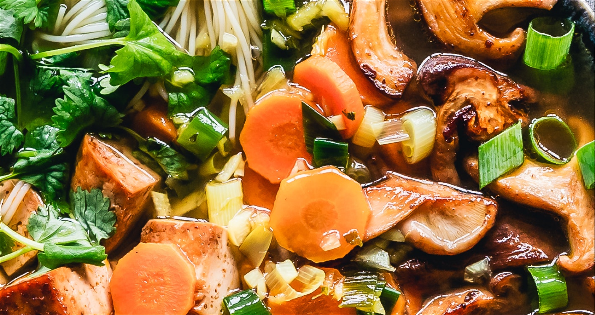

When Healthy Diet Isn’t a Choice Did you know healthy food is a previledge? When Healthy Diet Isn’t a Choice Did you know healthy food is a previledge? When Healthy Diet Isn’t a Choice Did you know healthy food is a previledge? When Healthy Diet Isn’t a Choice Did you know healthy food is a previledge? When Healthy Diet Isn’t a Choice Did you know healthy food is a previledge? When Healthy Diet Isn’t a Choice Did you know healthy food is a previledge? When Healthy Diet Isn’t a Choice Did you know healthy food is a previledge?
When Healthy Diet Isn’t a Choice
Did you know That healthy food is a previledge?
A visual essay and data visualization about the affordability of healthy food
by Huong Pham
So Healthy Diets Became a Trend on Social Media?
When it comes to the world of food and the health industry social media has played an enormous role in the rise of the nations’ awareness of their diet. The hashtag #healthydiet has gained 350 million views on TikTok - one of the most popular digital content platforms in 2022. Anyone with access to Tiktok can be introduced to a variable selection of healthy diets and how to best tailor them to your own personal preferences or body types. In other words, it is much easier these days to start a healthy diet today, with all the resources and information provided on social media.
All You Needed To Start one Was
motivation?

But 3 billion people
cannot even afford
a healthy diet.
Let's look into this together!
Pick a country
Even
having the option
to start a healthy diet
is a previledge
.
What about the whole world together?
The prevelance of undernourishment across the world varies greatly, noticeably between developed and developing countries. The countries in which undernourishment is most relevant are Yemen (41.6%), Democratic People's Republic of Korea (41.6%), Haiti (47.2%), Madagascar (48.5%), and Somalia (53.1%). Meanwhile, there are 113 out of 208 countries with only less than 10% prevelance.
So Healthy Diets Became a Trend on Social Media?
When it comes to the world of food and the health industry social media has played an enormous role in the rise of the nations’ awareness of their diet. The hashtag #healthydiet has gained 350 million views on TikTok - one of the most popular digital content platforms in 2022. Anyone with access to Tiktok can be introduced to a variable selection of healthy diets and how to best tailor them to your own personal preferences or body types. In other words, it is much easier these days to start a healthy diet today, with all the resources and information provided on social media.